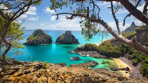
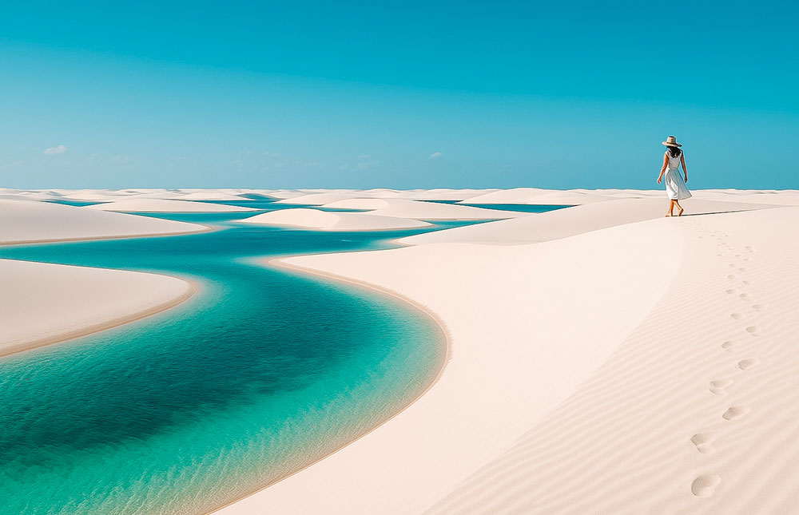
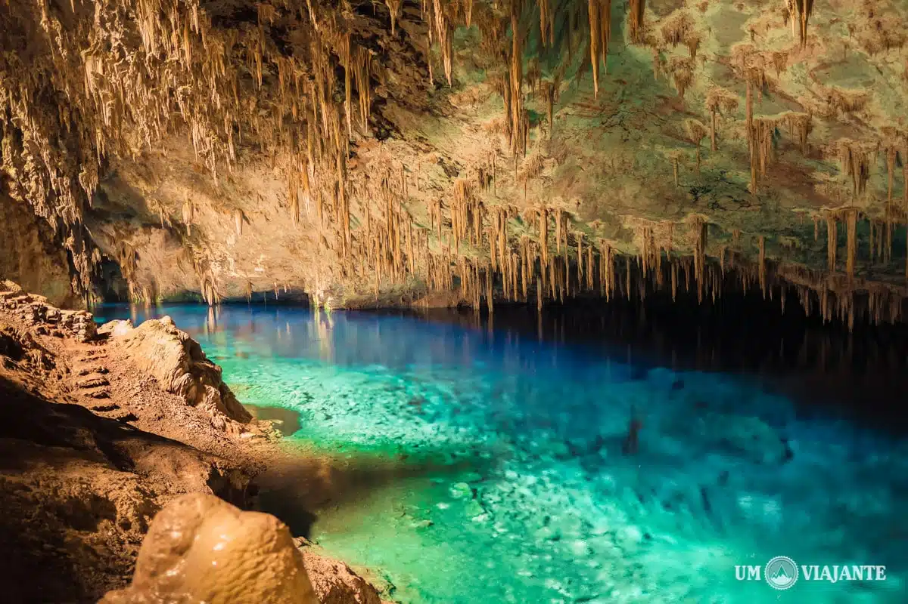
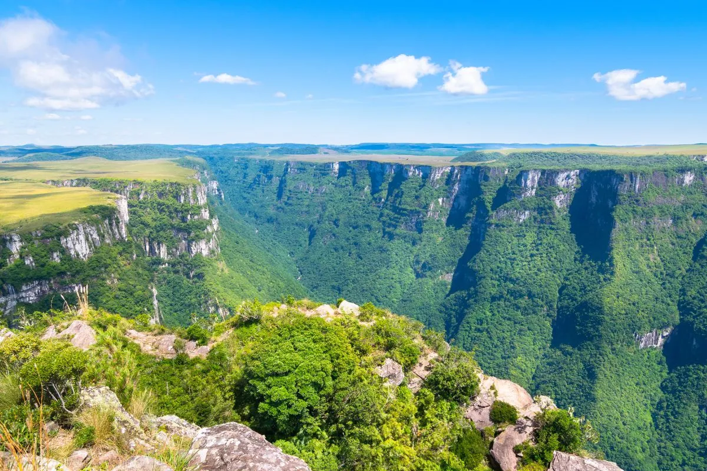
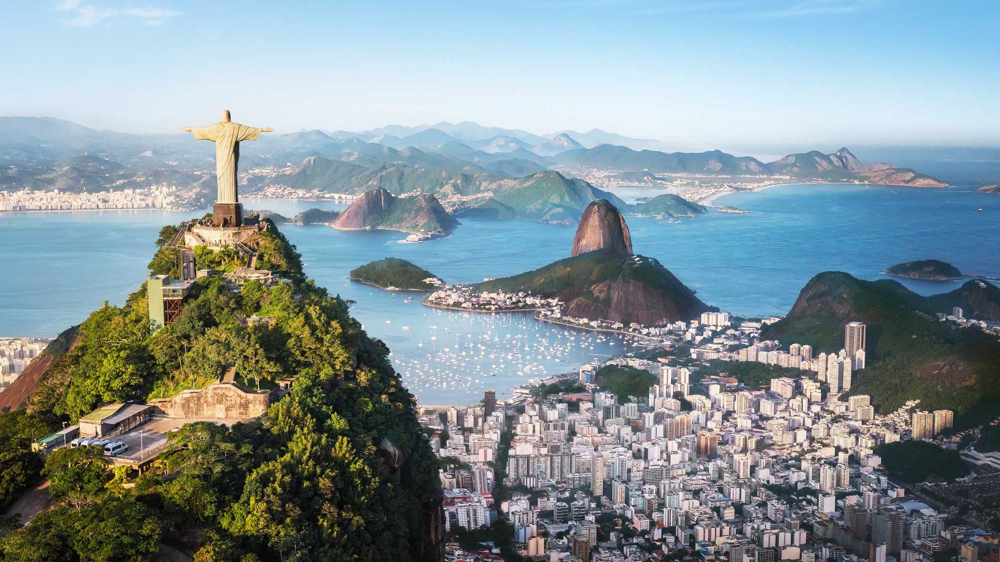

Roteiros de Norte a Sul
Nossa curadoria de destinos é feita pensando em viajantes que buscam fugir do óbvio. Abaixo, detalhamos nossas principais rotas para a temporada de 2026.

Fernando de Noronha
O paraíso ecológico brasileiro. Pacotes com mergulho guiado e trilhas exclusivas nas praias do Sancho e Porcos.

Lençóis Maranhenses
Um deserto de águas doces. Expedições em 4x4 pelas lagoas sazonais e pernoite em comunidades locais.

Bonito - MS
Flutuação em rios cristalinos e visita ao Abismo Anhumas. O melhor do ecoturismo estruturado.

Serra Gaúcha
Gramado e Canela além do chocolate. Roteiros pelas vinícolas boutique do Vale dos Vinhedos.

Chapada Diamantina
Para os amantes de trekking. Conheça a Cachoeira da Fumaça e o Morro do Pai Inácio.

Rio de Janeiro
Cultura, história e vistas de tirar o fôlego. O clássico com um toque de exclusividade Brasil Encantado.
Segurança em Primeiro Lugar
Todas as nossas expedições contam com seguro-viagem completo e rastreamento via satélite em áreas remotas. Viajar pelo Brasil exige planejamento logístico, e nós cuidamos de cada detalhe, desde o transporte entre aeroportos até as reservas nos melhores hotéis sustentáveis (Eco-Lodges).
Nossos guias são credenciados pelo Ministério do Turismo e possuem treinamento em primeiros socorros em áreas naturais, garantindo que sua única preocupação seja aproveitar a paisagem.